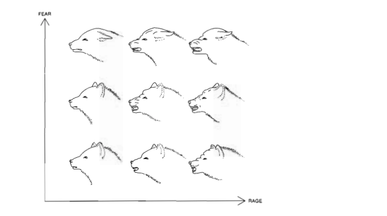

Homework 6
Homework 6
Exercise 1:
1. Most interesting lesson from Tufte
The most important thing I learned from this chapter is Tufte’s definition of graphical excellence: “Graphical excellence is that which gives to the viewer the greatest number of ideas in the shortest time with the least ink in the smallest space.” This really changed how I think about visualizations, it’s not about making things look fancy or complicated, it’s about communicating as much information as efficiently as possible.
2. Analysis of a Tufte graphic
Page number: 50

Why I chose this graphic:
I picked this one because it’s such a simple but effective way to show how two different emotions combine. Instead of using abstract numbers or colors, it just shows you what the dog’s face actually looks like. You can instantly understand the pattern without needing any explanation.
Encoding channels used:
The x-axis shows rage increasing from left to right, and the y-axis shows fear increasing from bottom to top. The actual encoding is in the dog’s facial features which are the ears, mouth, and eyes all change based on the combination of fear and rage. So each drawing in the grid represents a different emotional state.
Elements difficult to implement in Vega-Lite:
The custom drawings would be pretty much impossible. Vega-Lite can do points, lines, bars, and basic shapes, but it can’t draw detailed sketches like these dog faces. I could maybe make a grid with different colors or symbols for each combination, but I’d lose what makes this graphic work, the fact that you can actually see the emotions on the dog’s face.
Tufte’s point with this graphic:
He’s showing that you don’t need fancy 3D charts or complicated visualizations to display multiple variables at once. This simple 2D grid handles two continuous variables and their interaction really clearly. It’s also a good example of how choosing the right visual representation matters, using actual facial expressions makes the data way more intuitive than numbers or abstract symbols would be.
Exercise 2:
After reading pages 81-90 and 101-103 from Knaflic (2020), here are the key ideas that will change how I design data graphics:
Idea 1: The zero-baseline rule for bar charts, emphasizing that this is non-negotiable because of how our eyes compare bar endpoints, but that the rule doesn’t apply to lines/points where we focus on relative positions.
Idea 2: The concept that unfamiliar visualizations create cognitive hurdles and should only be used when they enable unique insights
Exercise 3:
Three Problems: 1. Dual y-axes trick you - The left axis goes 50-100% while the right goes 0-6%. This makes tiny changes in response rate look huge when they’re really just 1-2 percentage points. 2. Bars don’t start at zero - Starting at 50% makes an 84% completion rate look way worse than it is. The bars visually exaggerate small differences. 3. Confusing mix - Bars + line + two different scales = cognitive overload. Hard to know what to focus on.
How I’d fix it: Just use two simple line graphs, one for each metric with both starting at 0%. This lets people see the actual trends without visual tricks. Or use small multiples (two separate mini-charts stacked) to compare them side-by-side.
##vegalite code
{
"$schema": "https://vega.github.io/schema/vega-lite/v5.json",
"title": "Email Marketing Campaign Performance Over Time",
"data": {
"values": [
{"Date":"Q1-2017","Completion Rate":0.91,"Response Rate":0.023},
{"Date":"Q2-2017","Completion Rate":0.93,"Response Rate":0.018},
{"Date":"Q3-2017","Completion Rate":0.91,"Response Rate":0.028},
{"Date":"Q4-2017","Completion Rate":0.89,"Response Rate":0.023},
{"Date":"Q1-2018","Completion Rate":0.84,"Response Rate":0.034},
{"Date":"Q2-2018","Completion Rate":0.88,"Response Rate":0.027},
{"Date":"Q3-2018","Completion Rate":0.91,"Response Rate":0.026},
{"Date":"Q4-2018","Completion Rate":0.87,"Response Rate":0.039},
{"Date":"Q1-2019","Completion Rate":0.83,"Response Rate":0.028}
]
},
"vconcat": [
{
"title": "Completion Rate",
"mark": {
"type": "line",
"point": true,
"color": "#4472C4"
},
"encoding": {
"x": {
"field": "Date",
"type": "ordinal",
"axis": {"labelAngle": -45, "title": null}
},
"y": {
"field": "Completion Rate",
"type": "quantitative",
"title": "Rate",
"axis": {"format": ".0%"},
"scale": {"domain": [0, 1]}
}
},
"width": 450,
"height": 150
},
{
"title": "Response Rate",
"mark": {
"type": "line",
"point": true,
"color": "#ED7D31"
},
"encoding": {
"x": {
"field": "Date",
"type": "ordinal",
"title": "Quarter",
"axis": {"labelAngle": -45}
},
"y": {
"field": "Response Rate",
"type": "quantitative",
"title": "Rate",
"axis": {"format": ".1%"},
"scale": {"domain": [0, 0.05]}
}
},
"width": 450,
"height": 150
}
]
}